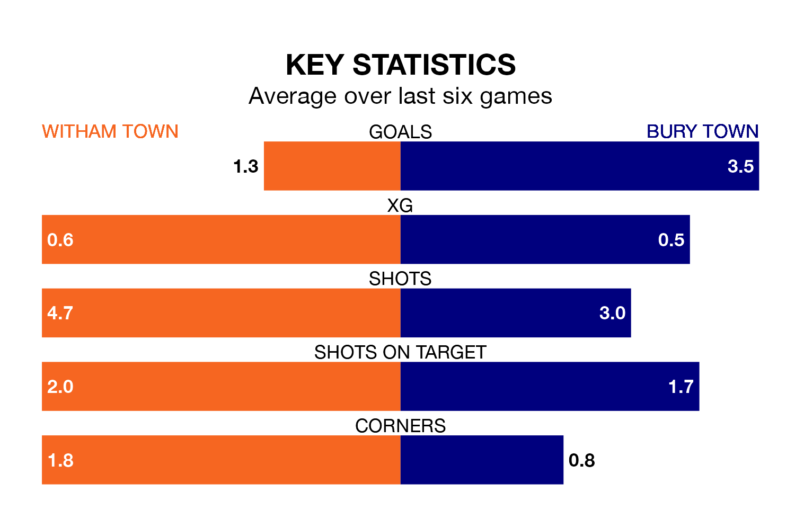

Bury Town come to the Village Glass Stadium to play Witham Town on Saturday in excellent form, having collected 16 points from their last six games.
The visitors have won five and drawn one of their last six fixtures, while Witham have two wins and four losses.
With 59 goals in 23 games so far this season, Bury are the league's second-highest scorers with 2.6 goals per game. And they are conceding fewer than average, letting in 35 goals at a rate of 1.5 per game.
Witham, meanwhile, are below average scorers, with 1.3 goals per game, compared to a league average of 1.7. They have conceded 1.9 goals per game.
In the last 10 years, Witham and Bury have played each other on eight occasions. Witham won three of them, Bury four, and they drew once.
On average, Witham scored 1.0 goal and Bury 1.9 in those matches.
Their last meeting was on November 11, when Bury won 3-0 at home.
Bury Town are fifth in the table after 23 games, of which they have won 13 and drawn five, earning 44 points.
Witham Town are eight places behind the visitors in 13th, with six wins and six draws putting them on 24 points.
Witham's last match was on February 3, a 4-0 loss against Basildon United.
Bury beat Brightlingsea Regent 4-1 last time out, also on February 3.
Updated: 09:34 (UTC), 08/03/24